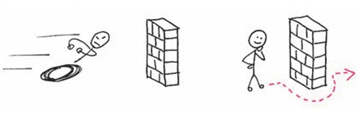
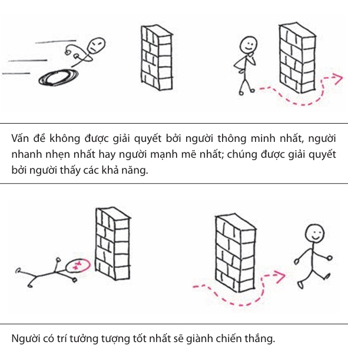
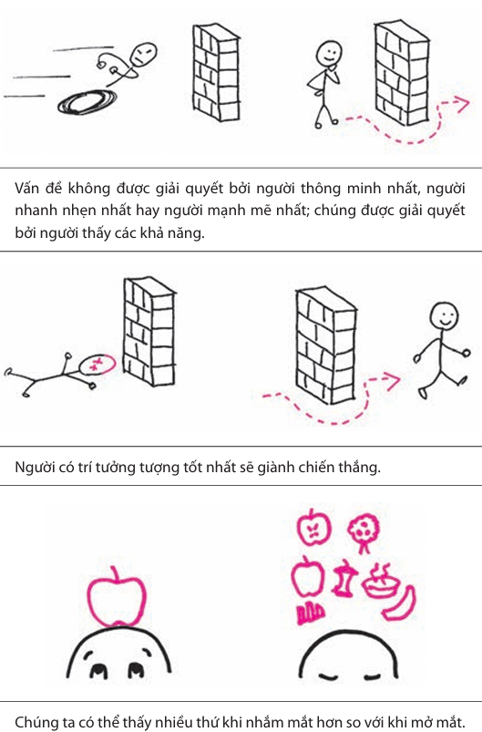

Chương 4: Ngày 3 - Hiểu
Lý do nằm ở chỗ: khi chúng ta tiếp tục hoàn thiện quy tắc 6x6 và những yếu tố cơ bản của quy trình giải quyết vấn đề bằng hình ảnh, độ tự tin về tư duy hình ảnh của chúng ta sẽ tiếp tục gia tăng, và chúng ta sẽ bắt đầu thực sự thấy được khả năng tư duy hình ảnh tiềm ẩn của mình.
Ba công cụ "có sẵn" của chúng ta, quy trình bốn bước, và quy tắc 6x6 đều có vai trò lớn, nhưng vẫn còn một lưỡi dao nữa mà chúng ta chưa mở ra trong bộ công cụ tư duy hình ảnh. Cho đến nay, chúng ta đã tập trung vào thế giới trước mắt, học cách quan sát kỹ và thấy các mô hình. Nhưng bây giờ, chúng ta sẽ bắt đầu sử dụng tâm trí để hình dung các cách giải quyết vấn đề.
Hãy tạm rời khỏi quy tắc 6x6 và tìm kiếm các giải pháp theo một hướng hoàn toàn khác: hãy thâm nhập vào tâm trí của mình trong một lúc và xem chúng ta có thể thấy điều gì.
Tâm trí của chúng ta
Trong các cuộc họp kinh doanh, chúng ta đều được yêu cầu phải "sáng tạo" và "sử dụng trí tưởng tượng của mình" và "suy nghĩ vượt ra ngoài khuôn khổ". Nhưng có một vấn đề lớn: trong thế giới thực, bao nhiêu người trong chúng ta được dạy cách từ bỏ mọi thứ và bỗng nhiên tư duy khác biệt?

Tôi nghĩ rằng chúng ta đã có mồi lửa đó, và hãy đoán xem đó là gì? Chìa khóa chính là các hình vẽ.

Vấn đề không được giải quyết bởi người thông minh nhất, người nhanh nhẹn nhất hay người mạnh mẽ nhất; chúng được giải quyết bởi người thấy các khả năng.

Thấy được một vấn đề nghĩa là thấy được cách giải quyết nó. Nếu chúng ta thấy các mảnh ghép tạo nên vấn đề của mình, thấy các mô hình bên trong chúng, và thấy cách sử dụng các mô hình đó để đạt được một kết quả khác, khi đó, tất cả những gì cần làm để giải quyết vấn đề là quyết định thực hiện nó.

Để kích hoạt trí tưởng tượng một cách bài bản, chúng ta sử dụng công cụ SQVID. Đây là 5 câu hỏi giúp chúng ta nhìn nhận một ý tưởng từ nhiều góc độ khác nhau:
S (Simple vs Elaborate): Đơn giản hay Chi tiết?
Q (Qualitative vs Quantitative): Định tính hay Định lượng?
V (Vision vs Execution): Tầm nhìn hay Thực thi?
I (Individual vs Comparison): Cá thể hay So sánh?
D (Delta vs Status Quo): Sự thay đổi hay Trạng thái hiện tại?
Bằng cách đi qua các "nút thắt" này, chúng ta có thể mở rộng tư duy và tìm ra những giải pháp đột phá mà trước đây chúng ta chưa từng nghĩ tới.